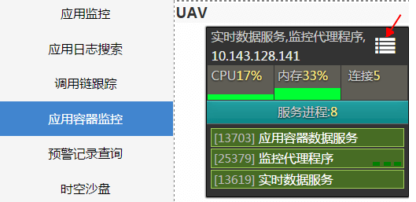
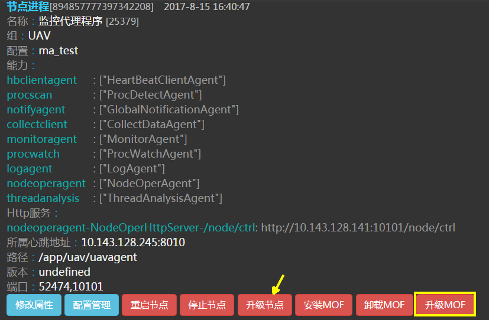
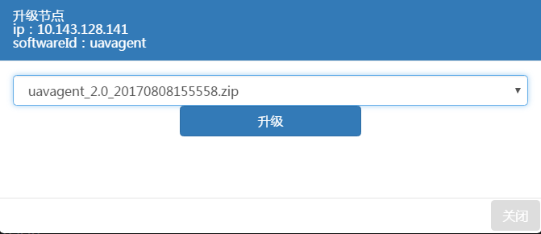
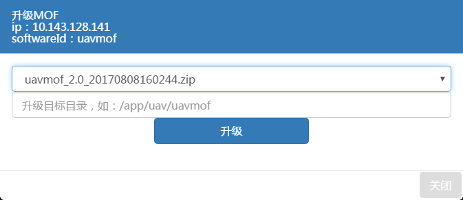

升级更新
uav提供了监控代理程序、健康管理程序及中间件增强框架的一键升级功能。首先你需要启动升级中心服务，然后在部署每个节点程序(监控代理程序或者健康管理服务)时，对升级模块进行配置。
升级模块
升级模块配置文件和节点程序配置文件在同一文件夹下，文件名为upgrade.properties。 配置如下
feature.hbclientagent.hbservers=心跳服务地址
feature.upgradeagent.enable=true
feature.upgradeagent.http.server.host=升级中心ip
feature.upgradeagent.http.server.port=升级中心端口
feature.upgradeagent.backup.count=历史备份个数
feature.upgradeagent.download.retry.count=升级重试次数
feature.upgradeagent.download.retry.after=升级重试超时,单位s
升级步骤
- 将新安装包与对应的MD5校验文件上传至升级中心安装包目录packages对应的目录中
- 打开APPHUB应用，进入应用容器监控页面
 点击需升级节点右上方按钮进入容器画像页面。
 点击节点程序中升级节点，弹出升级节点程序页面。  在下拉框中选择需升级包版本，点击升级按钮则开始升级节点程序。 在容器画像页面中点击升级MOF，弹出升级中间件增强框架(MOF)页面。
 在下拉框中选择需升级包版本，并在输入框里输入中间件增强框架(MOF)安装目录，点击升级按钮则开始升级MOF，MOF升级后，相应的JEE中间件需重启才能生效。